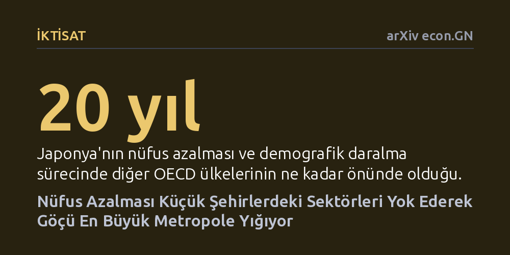

IKTISAT · arXiv econ.GN · 2026-09-11
Araştırma, nüfus azalmasının şehirler ve sektörler üzerindeki mekânsal etkisini Japonya'daki genç çalışanların panel verileriyle inceledi. Ülke genelinde ekonomi orantılı küçülüyor gibi görünse de küçük şehirlerin sektörlerini hızla kaybedip yoksullaştığı ve çalışanların gelirlerini korumak için en büyük metropole göç ettiği belirlendi.
Nüfus gerilemesinin tüm şehirleri eşit oranda küçülteceği yanılgısını yıkarak, küçük yerleşimlerin aniden sektör kaybetmesiyle nüfusun neden en büyük metropolde toplandığını açıklar.

Bir ülkenin toplam nüfusu gerilediğinde, makroekonomik tablolara uzaktan bakanlar genelde her sektörün biraz küçüleceğini ancak mevcut yapının korunacağını varsayar. Oysa coğrafi haritaya yakından bakıldığında durum çok farklıdır. Ülke genelinde ekonomik çeşitlilik korunuyor gibi görünse de yerel düzeyde daralma son derece dengesiz yaşanmakta ve bazı yerleşimler tüm sektörlerini birer birer kaybetmektedir. Bu çalışma, demografik daralmanın mekânda nasıl gerçekleştiğini ve neden küçük yerleşimleri çok daha sert vurduğunu inceliyor.
Bu sorunun cevabı kentsel planlama ve bölgesel kalkınma politikaları açısından kritik önemdedir. Eğer küçülme her kente eşit dağılsaydı, kamu hizmetlerini ve ekonomik teşvikleri homojen bir biçimde kısmak dengeli bir çözüm sunabilirdi. Ancak küçük kentlerin sektörlerini toptan kaybetmesi, insanları kaçınılmaz olarak dev metropollere sürüklemektedir. Bu durum bir yandan taşrayı boşaltıp işlevsizleştirirken, diğer yandan en büyük metropolde yoğunlaşmayı ve konut baskısını artırmaktadır.
Araştırmacılar bu soruyu yanıtlamak amacıyla, demografik yaşlanma sürecinde diğer OECD ülkelerinin yaklaşık yirmi yıl önünde ilerleyen Japonya'yı mercek altına aldı. Analizin temel veri kaynağını, bölgesel göç hareketlerinin asıl taşıyıcısı olan genç çalışanlara ait mikro düzeydeki panel verileri oluşturdu. Bu zengin veri seti, çalışanların hangi şehirlerden ayrıldığını, hangi işlere geçtiğini ve nereye göç ettiğini adım adım izleme olanağı sağladı.
Kurulan ekonometrik modelde yalnızca nominal kazançlar değil, yerel yaşam ve barınma giderlerini hesaba katan reel ücretler kullanıldı. Araştırmacılar, genç çalışanların Tokyo'ya göç etme motivasyonlarını kaynak şehirlerin nüfus büyüklüğü ve barındırdığı sektör yapısıyla ilişkilendiren bir ücret regresyonu yürüttü. Böylece teorik olarak öngörülen sektör eşiklerinin gerçek göç kararları üzerindeki etkisi doğrudan ölçüldü.
Çalışmanın ortaya koyduğu en temel mekanizma, sektörlerin var olabilmek için ihtiyaç duyduğu asgari nüfus eşiklerinde yatmaktadır. Her sanayi ve hizmet kolu ancak belirli bir büyüklüğün üzerindeki yerleşimlerde ekonomik olarak tutunabilmektedir. Temel ihtiyaçlara dönük pek çok sektörün eşik değeri nüfus hiyerarşisinin alt kısımlarında kümelendiği için, bir kentin sektör sayısı ve sunduğu istihdam olanakları nüfus büyüklüğüne göre keskin bir içbükeylik sergilemektedir.
Bu içbükey yapı nedeniyle küçük bir kentteki mütevazı bir nüfus kaybı dahi o yerleşimi birden fazla sektör eşiğinin altına aynı anda itmektedir. Sonuç olarak küçük şehirler çok sayıda sektörü birden kaybederken, büyük çekirdek şehirler yalnızca birkaç uzmanlaşmış iş kolunu yitirmektedir. Küçük kentte tutunamayan sektörler basamak atlayarak onları barındırabilecek bir üst büyüklükteki şehre yığılmakta, geride kalan yerel çalışanlar ise daha düşük ücretli işlere geçmek zorunda kalmaktadır.
Küçük kentlerde sektörlerin yok olmasıyla gelir kaybına uğrayan çalışanlar için bu kaybı telafi etmenin tek yolu kalmaktadır: Tüm sektör yelpazesini eksiksiz barındıran zirvedeki metropole, yani Tokyo'ya taşınmak. Ampirik bulgular, genç çalışanların Tokyo'ya göç etme teşvikinin geldikleri şehrin nüfus büyüklüğüne ve sektör kaybetme kırılganlığına göre şekillendiğini doğrulamaktadır. Bu durum, genel nüfus azalırken zirvedeki metropolün nüfus payının neden artmaya devam ettiğini netleştirmektedir.
Elde edilen sonuçlar, bölgesel eşitsizliği gidermeyi amaçlayan klasik sübvansiyon politikalarının neden yetersiz kaldığını gösteriyor. Nüfus eşikleri dikkate alınmadan küçük yerleşimlere dağıtılan genel destekler, kritik eşiğin altına düşen sektörleri orada tutmaya yetmemektedir. Politika yapıcıların nüfus azalmasını homojen bir küçülme süreci olarak değil, sektörlerin yukarıya doğru kaçtığı mekânsal bir yeniden yapılanma olarak ele alması gerekmektedir.